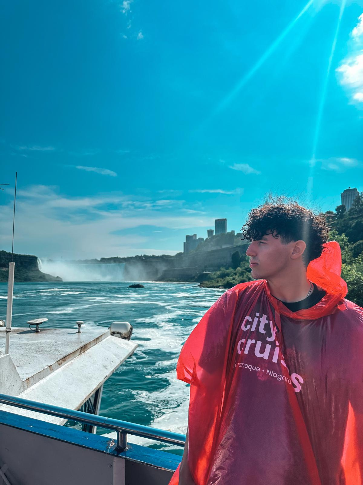

Our Team

Assaf Golan
Before moving to the Netherlands, I spent nearly three years leading technical operations in an Intelligence Special Operations unit. I managed a team that built and maintained the infrastructure for 24/7 global intelligence ops. I thrive on combining hands-on, high-stakes experience with engineering to build reliable, high-impact software.

